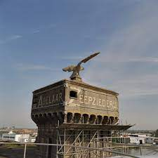

Wormerveer
Zaanstad
Weetje 1:
Wormerveer telt circa 11.525 inwoners (2021).
De plaatsnaam is een verwijzing naar een veer over de Zaan naar het aan de overzijde gelegen dorp Wormer.
Weetje 2:
Wormerveer is onder meer bekend vanwege de windmolens, die vooral olie persten.
Nog steeds is er olieverwerkende industrie aanwezig in Wormerveer.
Weetje 3:
Wormerveer heeft de kortste Stationsstraat van Nederland.
De straat is circa 75 meter lang.
Weetje 4:
Mede door de oliemolens hebben de inwoners van
Wormerveer de bijnaam Gladoren.
Paintball Jungle:
Paintball Jungle beschikt over de spannendste en
meest uitgebreide paintball locatie van Nederland
meest uitgebreide paintball locatie van Nederland
Wij bieden een uitgebreid pakket
aan ongekende faciliteiten.
aan ongekende faciliteiten.
Kies uit de uitgebreide Paintball arrangementen bij Paintball Jungle
Zeepziederij
De Adelaar
De fabriek heeft - situationele en stedenbouwkundige
waarde als beeldbepalend fabriekscomplex aan de Zaan
waarde als beeldbepalend fabriekscomplex aan de Zaan
waarbij de toren met adelaar een landmark vormt, - sociaal-historische waarde als element uit de geschiedenis van handel en industrie in Nederland
